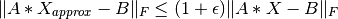

Numerical Linear Algebra Primitives¶
This layer implements various numerical linear algebra primitives that are accelerated using sketching.
Randomized Linear Least-Squares¶
Based on the regression framework in the algorithmic layer, this functionality provides sketching based linear least-squares regression routines. That is, solve equations of the form:

Note that the various algorithms can be executed directly using the regression API. This layer just provides an easy-to-use functional interface that mirror Elemental’s LeastSquares function, but uses sketching to accelerate the computation.
A running example is provided in libskylark/examples/least_squares.cpp.
Approximate Least-squares¶
Solve the problem approximately using a sktech-and-solve strategy.
Specifically, solve  where
where  is a Fast Johnson-Lindenstrauss Transform matrix
(Ailon and Chazelle, 2009).
It can be shown that if
is a Fast Johnson-Lindenstrauss Transform matrix
(Ailon and Chazelle, 2009).
It can be shown that if  is large enough (as a function of
is large enough (as a function of  ), then
), then

where  and
and  is the approximate solution.
For the best known bounds see Boutsidis and Gittens (2013).
is the approximate solution.
For the best known bounds see Boutsidis and Gittens (2013).
- The algorithm used is the one described in:
- P. Drineas, M. W. Mahoney, S. Muthukrishnan, and T. SarlosNumerische Mathematik, 117, 219-249 (2011).
Unlike the algorithm described in the paper we allow the user to set the size of .
There is also a default value, but it is much lower than the one suggested by that paper.
Note: it is assume that a  matrix can fit in the memory of a single node
(
matrix can fit in the memory of a single node
( is the number of columns in
is the number of columns in  ).
).
-
void
ApproximateLeastSquares(El::Orientation orientation, const El::Matrix<T> &A, const El::Matrix<T> &B, El::Matrix<T> &X, base::context_t &context, int sketch_size = -1)¶
-
void
ApproximateLeastSquares(El::Orientation orientation, const El::DistMatrix<T, El::VC, El::STAR> &A, const El::DistMatrix<T, El::VC, El::STAR> &B, El::DistMatrix<T, El::STAR, El::STAR> &X, base::context_t &context, int sketch_size = -1)¶
If orientation is set to NORMAL, then approximate  , otherwise
orientation must be equal to
, otherwise
orientation must be equal to ADJOINT and  is approximated.
is approximated.
sketch_size controls the number of rows in  .
.
A flavor of usage is given in the code snippet below.
#include <elemental.hpp>
#include <skylark.hpp>
...
// Setup regression problem with coefficient matrix A and target matrix B
...
skybase::context_t context(23234);
// Solve the Least Squres problem of minimizing || AX - B||_2 over X
skylark::nla::ApproximateLeastSquares(El::NORMAL, A, X, B, context);
Faster Least-squares¶
Solve the linear least-squares problem using a sketching-accelerated algorithm. This algorithm uses sketching to build a preconditioner, and then uses the preconditioner in an iterative method. While technically the solution found is approximate (due to the use of an iterative method), the threshold is set close to machine precision so the solution’s accuracy is close to the full accuracy possible on a machine.
- The algorithm used is the one described in:
- Haim Avron, Petar Maymounkov, and Sivan ToledoSIAM Journal on Scientific Computing 32(3), 1217-1236, 2010
Note: it is assume that a  matrix can fit in the memory of a single node
( is the number of columns in ).
matrix can fit in the memory of a single node
( is the number of columns in ).
-
void
FastLeastSquares(El::Orientation orientation, const El::DistMatrix<T, El::VC, El::STAR> &A, const El::DistMatrix<T, El::VC, El::STAR> &B, El::DistMatrix<T, El::STAR, El::STAR> &X, base::context_t &context)¶
If orientation is set to NORMAL, then approximate , otherwise
orientation must be equal to ADJOINT and is approximated.
A flavor of usage is given in the code snippet below.
#include <elemental.hpp>
#include <skylark.hpp>
...
// Setup regression problem with coefficient matrix A and target matrix B
...
skybase::context_t context(23234);
// Solve the Least Squres problem of minimizing || AX - B||_2 over X
skylark::nla::FasterLeastSquares(El::NORMAL, A, X, B, context);
Randomized Singular Value Decomposition¶
The randomized SVD functionality provides a distributed implementation of algorithms described in
- The prototypical algorithm involves the following steps, given a matrix
- Compute an approximate orthonormal basis for the range of
.
- Use
The first step is accelerated using sketching.
Rand SVD¶
Randomized SVD is implemented by the use of functors which are first initialized to the type of transform and then the arguments are passed to the constructed functor.
-
struct skylark::nla::randsvd_t<skylark::sketch::sketch_transform_t<InputMatrixType, OutputMatrixType>> Constructor
-
randsvd_t(skylark::sketch::sketch_transform_t &st)¶ Initialize the functor with the sketching transform desired.
Accessors
-
void operator()<InputMatrixType, UMatrixType, SingularValuesMatrixType, VMatrixType> (InputMatrixType &A, int target_rank, UMatrixType &U, SingularValuesMatrixType &SV, VMatrixType &V, rand_svd_params_t params, skylark::base::context_t& context) The overloaded operator takes the input matrix A and produces the output matrices U, SV and V. In addition, a params object is passed which contains the parameters shown below.
-
-
struct skylark::nla::rand_svd_params_t Constructor
-
rand_svd_params_t(int oversampling, int num_iterations = 0, bool skip_qr = 0)¶ The arguments include how much oversampling needs to be performed (oversampling), the number of subspace iterations needed (num_iterations) and an optimization flag (skip_qr) to skip a step in the algorithm.
-
A flavor of usage is given in the code snippet below.
#include <elemental.hpp>
#include <skylark.hpp>
...
/* params structure contains parameters of the randomized SVD algorithm */
/* These parameters include oversampling, number of power iterations and
whether repeated QR iterations should be skipped */
skylark::nla::rand_svd_params_t params(oversampling_parameter);
/* create a rand_svd object parameterized by the Sketch */
skylark::nla::randsvd_t<skylark::sketch::JLT_t> rand_svd;
...
/* Call the randomized SVD algorithm on Elemental or CombBLAS matrix A */
rand_svd(A, target_rank, U, S, V, params, context);
The rand_svd function accepts certain combinations of matrix types for the input A and the SVD factors: U, S and V. Currently, the matrix types are Elemental MC/MR or El::Matrix types.
For a running example, please see libskylark/examples/rand_svd.cpp.